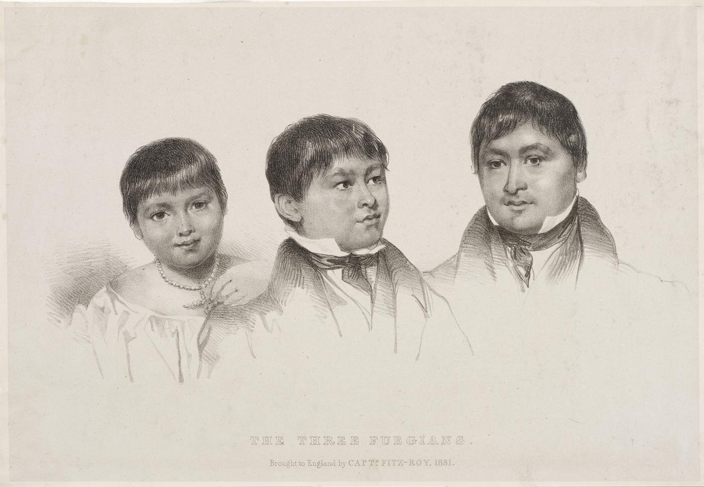
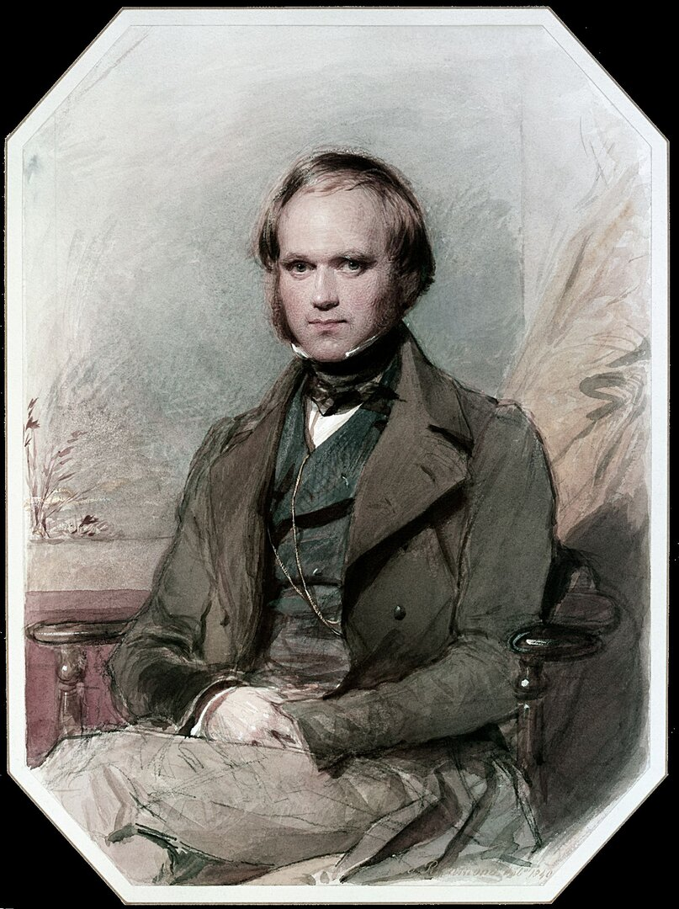

01
O Ser Humano Primitivo
Darwin e os fueguinos: o encontro com povos que pareciam viver nas condições mais primitivas — e, ainda assim, possuíam noção do sagrado.
À esquerda, retrato de um fueguino (possivelmente um yagan), pintado por Conrad Martens, artista do navio HMS Beagle, ca. 1832.
Os três fueguinos (Fuegia Basket, Jemmy Button e York Minster) levados à Inglaterra pelo Cap. Fitz-Roy, 1831. E Charles Darwin, pintado por George Richmond, ca. 1838.